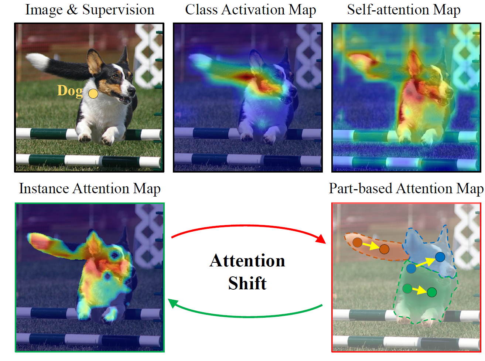
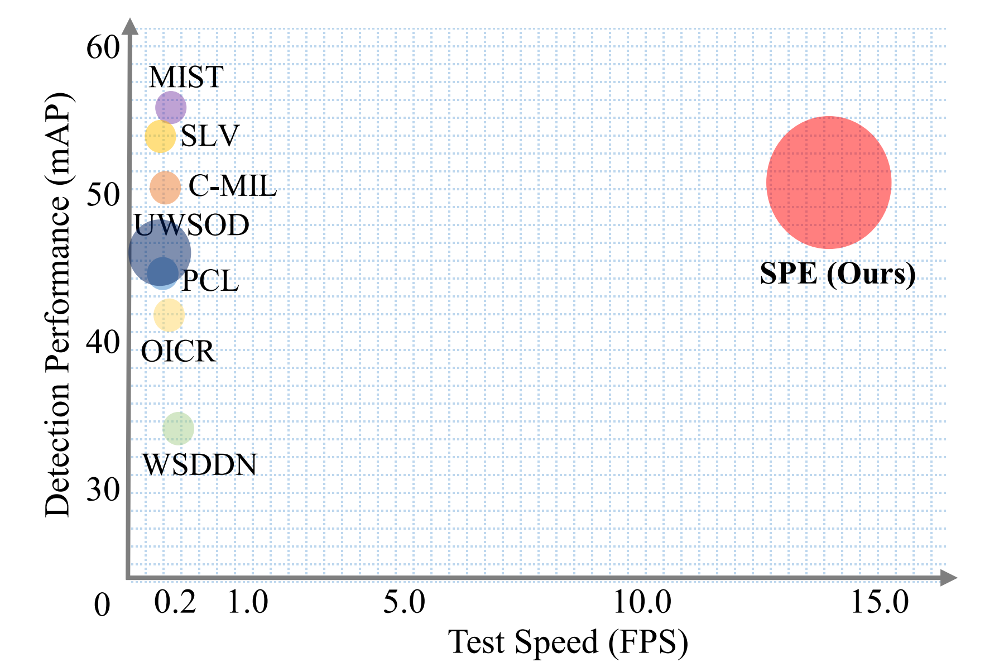

Mingxiang LiaoPh.D. candidateRoom 260, Academy 2 Building
|
|
I am a Ph.D. candidate in LAMP (Learning And Machine Perception) in the School of Electronic, Electrical and Communication Engineering, University of Chinese Academy of Sciences , advised by Prof. Qixiang Ye. I earned a B.E. from the Harbin Institute of Technology, Shenzhen in June 2020.
My research interests include Weakly Supervised Learning and Multimodal Machine Learning.
|  | Mingxiang Liao, Zonghao Guo, Yuze Wang, Bailan Feng, Peng Yuan, Fang Wan
AttentionShift: Iteratively Estimated Part-based Attention Map for Pointly Supervised Instance Segmentation" 2023 IEEE/CVF Conference on Computer Vision and Pattern Recognition (CVPR2023) [Paper] |
|  | Mingxiang Liao, Fang Wan, Yuan Yao, Zhenjun Han, Jialing Zou, Yuze Wang, Bailan Feng, Peng Yuan, Qixiang Ye
End-to-End Weakly Supervised Object Detection with Sparse Proposal Evolution 2022 European Conference on Computer Vision (ECCV2022) [Paper] [Code] |